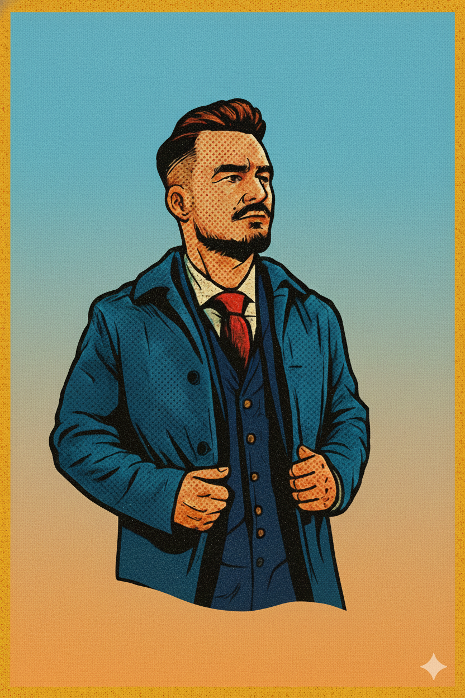

Hey! I'm Sebastian, a PhD student and research assistant at Leipzig University with a strong interest in the configuration landscape of modern software systems and configuration dependencies.
A key part of my research focuses on modeling the configuration landscape of modern software systems to uncover cross-technology configuration dependencies. I also work with large language models (LLMs), retrieval-augmented generation (RAG), and agent-based systems to build tools that help detect and validate configuration dependencies.
Outside of research, I enjoy staying active—bouldering, playing badminton, and going for runs or to the gym are some of my favorite ways to unwind.
Proficient in a range of programming languages and technologies including Python, Java, C#, Node.js, Spring, Maven, and Docker.
Hands-on experience with LLMs, embedding models, and advanced architectures such as RAG and agent-based systems.
Extensive experience in empirical research, academic publishing, presenting, and applying research insights to practical software prototypes.
Skilled in supervising students and organizing courses such as software engineering internships and SE4AI.
Modelling configuration landscapes of modern software systems and tackling configuration dependencies.
Thesis on finding test gaps in software systems using changed-based analysis.
Web application testing with Cypress.io and C# application development.
Web application testing and automation using Selenium.
Web interface testing and test automation with HP UFT.
Thesis on automated cross-browser testing.
A framework for modeling the configuration landscape of software projects to detect and extract cross-stack configuration dependencies.
As part of my master thesis, I developed a tool to analyze the historical changes in software repositories to identify test gaps.
A platform for running a CrossFit Box and supporting athlete training.
IEEE/ACM 40th International Conference on Automated Software Engineering, ASE 2025
We validated configuration dependencies via RAG, showing that incorporating tailored contextual information significantly improves the validation performance of all studied LLMs.
IEEE/ACM 4th International Conference on AI Engineering–Software Engineering for AI (CAIN, 2025)
We mapped topics that practitioners discuss online about building LLM-based applications, offering practical insights into key considerations for developing such systems.
ArXiv
This paper presents a methodology for a sound and reliable evaluation of RAG systems. We demonstrated its applicability on a real-world software engineering research task: the validation of configuration dependencies.
IEEE/ACM 2nd International Conference on AI Engineering–Software Engineering for AI (CAIN, 2023)
This work explores hyperparameter usage and tuning in machine learning research. We showed that most of the hyperparameters remain untouched, and those that have been changed use constant values. We also found a significant difference between tuning hyperparameters and the reporting about it in the corresponding research papers.
IEEE Transactions on Software Engineering
We developed CfgNet, a framework that models the configuration landscape of a software project as a configuration network in an extensible and artifact-independent way. With CfgNet, we enable the early detection of possible dependency violations and proactively prevent misconfigurations during software development and maintenance.